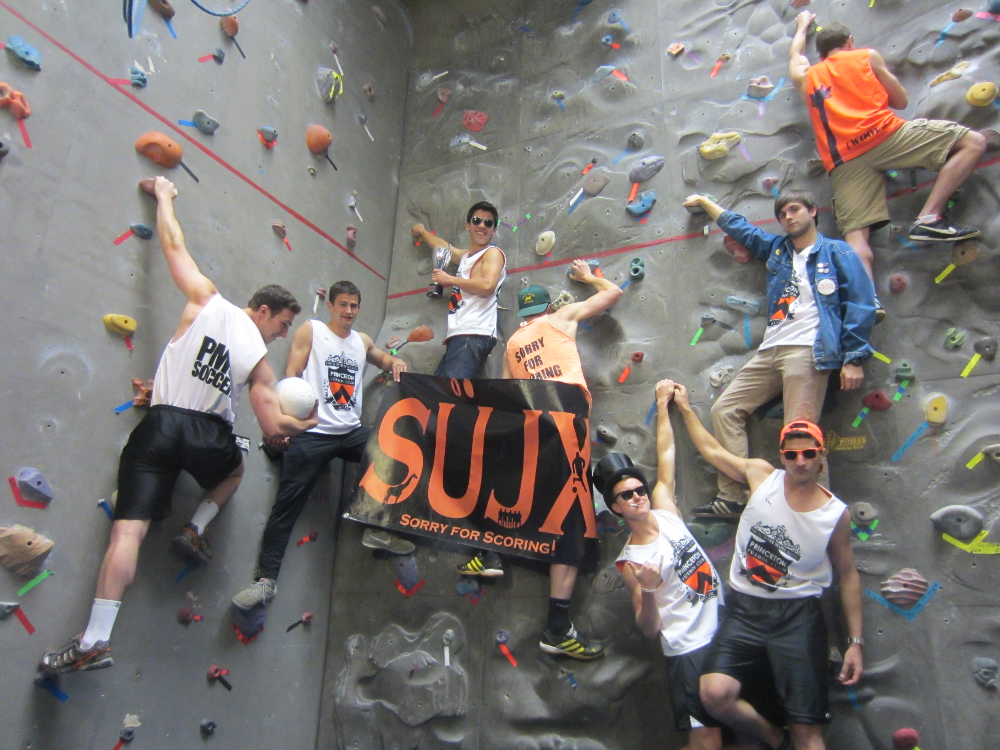

What is the Princeton Men's Club Soccer Team?
The Princeton Men's Club Soccer Team (PMCS) is an officially recognized Princeton Club Sport designed for players who are not playing for the
Princeton varsity soccer team but have played at a high level throughout high school and are looking for an opportunity to continue doing so in college.
Any enrolled Princeton student is encouraged to tryout for the team during the annual tryouts held in the fall. The club is comprised of three squads:
A Team: This is the club's most competitive squad. This team competes against the top squads from other schools and at the Ivy League Tournament. Practice attendance and performance are both expected and determinant of playing time in competitive matches.
B Team: The club's second competitive squad is also composed of elite players. Attendance at practice is still expected. Top-performing players from the B team may be called up to th A Team for league games as well as the Ivy League Tournament.
Practice Squad: The practice squad is a non-competitive option the club offers for players who do not qualify for the A or B teams. There are no cuts for this team. The practice squad meets once a week for pickup games using the club's equipment and facilities. Top-performing practice squad players have been called up to the competitive squads in the past, and will have an advantage over their classmates at tryouts the following years.

Some of our officers displaying our balls, tanks, and flag before our Dean's Date Spring 2013 Celebration.
Membership
If you are selected for the A or B team the commitment during the fall typically consists of three practices per week with a game on the weekend. Typically, Saturday night is when the team gets together and celebrates
a week of hard work. During the winter season, practices are optional and are held two nights a week in Dillon gym. The normal practice schedule resumes in the Spring. The practice squad meets once per week and does not participate in any social activities with the club.
Overall, if selected to the team, you will become part of a proud tradition of soccer, friendship and fun.